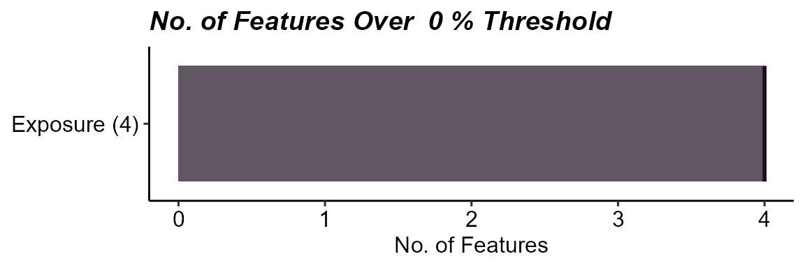
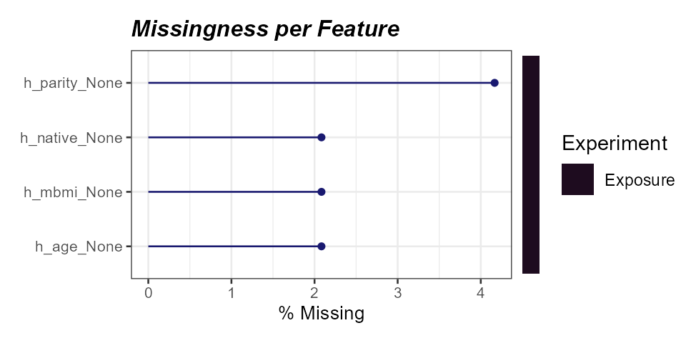
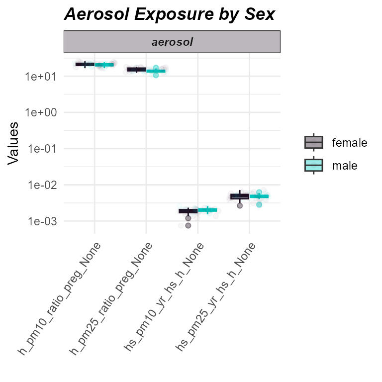
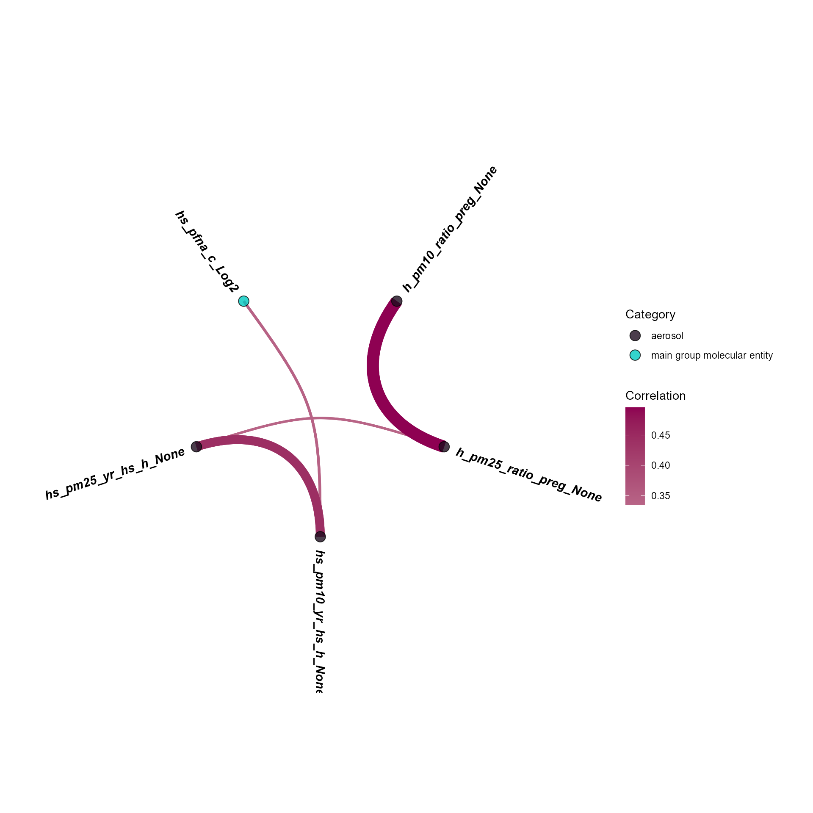
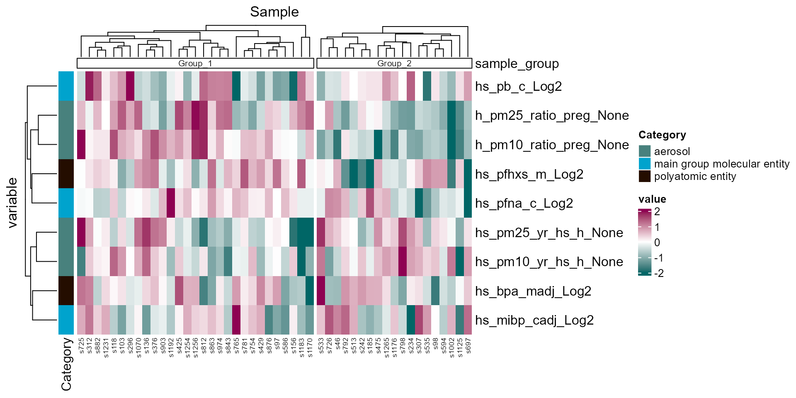
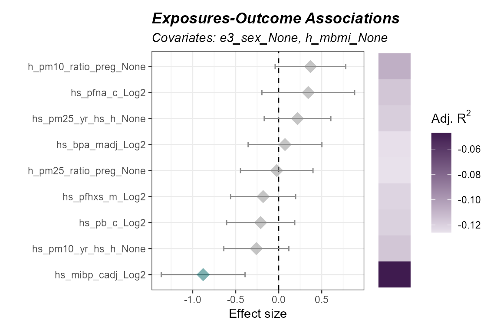
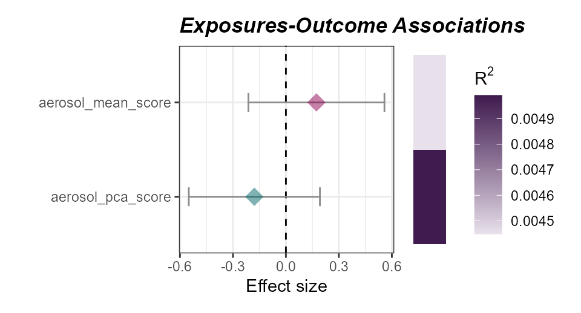
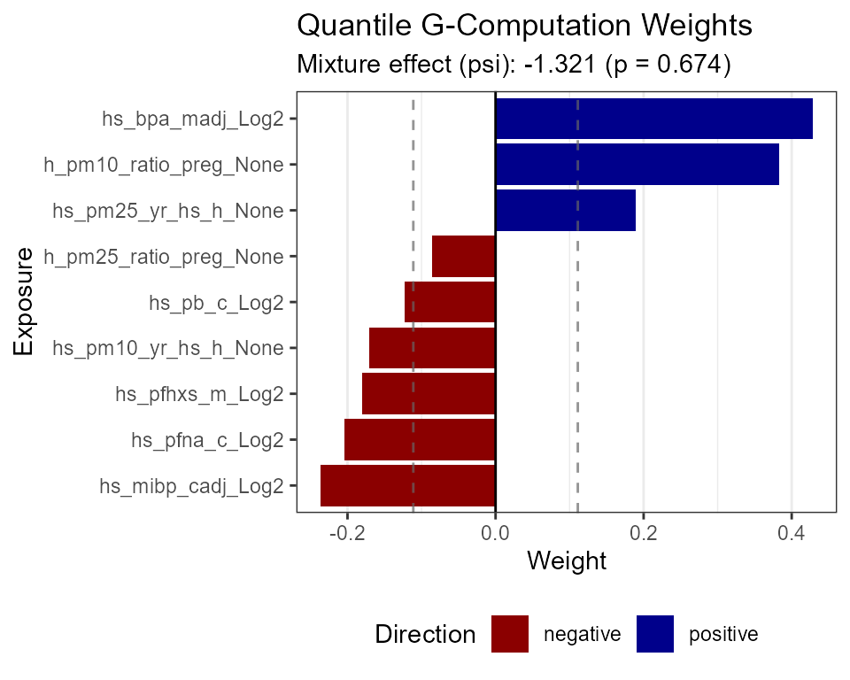

Many users in environmental epidemiology want to run exposure-outcome analyses without multi-omics data. The exposome framework applies equally well to traditional epidemiologic studies where the goal is to associate environmental exposures with health outcomes while adjusting for confounders.
This vignette demonstrates how to use tidyexposomics as
an exposome-wide association study (ExWAS) and mixture-analysis toolkit
using exposure metadata only, whereno omics required.
Building an Exposure-Only Exposomicset
Loading the Example Data
We use the same exposure and phenotype data from the ISGlobal Exposome Data Challenge that appears in the main vignette, but here we create an exposure-only object by omitting the omics layers:
## [1] "annotated_cb" "exp_filt" "exp_fdata" "methyl_filt" "methyl_fdata"
## [6] "meta"The meta data frame contains exposures, covariates, and
outcomes. Let’s examine the structure.
tidyexposomics_example$meta |>
head()## e3_sex_None hs_child_age_None h_age_None h_mbmi_None e3_gac_None
## s812 female 6.836413 35.00000 33.22551 41.42857
## s296 female 6.746064 32.78111 25.07812 39.14286
## s242 female 6.973306 33.00000 24.64775 40.42857
## s376 male 6.346224 27.06366 28.31096 37.00000
## s1183 female 6.740589 32.72553 33.32135 38.14286
## s98 female 6.926762 23.00000 31.15745 39.00000
## h_native_None h_parity_None h_pm10_ratio_preg_None h_pm25_ratio_preg_None
## s812 0 2 24.96759 17.85777
## s296 0 <NA> 22.21012 16.05690
## s242 0 2 19.95230 15.32761
## s376 2 1 24.28752 14.28347
## s1183 1 2 20.17778 16.58455
## s98 2 <NA> 19.76697 13.65668
## hs_pm10_yr_hs_h_None hs_pm25_yr_hs_h_None hs_pb_c_Log2 hs_pfna_c_Log2
## s812 22.52299 17.92422 4.255501 -1.781710
## s296 22.89795 14.94683 5.000000 -1.930997
## s242 22.00589 15.95083 3.446256 -1.528151
## s376 22.09434 12.99587 2.737687 -2.292137
## s1183 36.57794 19.43317 4.169925 -2.183130
## s98 22.00589 13.97441 3.472488 -2.708036
## hs_pfhxs_m_Log2 hs_bpa_madj_Log2 hs_mibp_cadj_Log2 hs_asthma hs_zbmi_who
## s812 -2.0164845 -0.7413204 5.871190 0 -1.27
## s296 -2.3069578 0.4073173 6.444691 0 -0.89
## s242 -3.1436427 1.8318378 6.837454 1 -1.08
## s376 0.4352153 1.3881923 6.375511 1 -0.34
## s1183 0.9824174 0.0475969 6.915389 0 3.31
## s98 -0.1649824 -0.8048743 6.120795 0 0.91Defining Exposure Variables
We pull exposure variables from the annotated codebook, focusing on aerosols, metals, and other chemical exposures.
exp_vars <- tidyexposomics_example$annotated_cb |>
filter(category %in% c(
"aerosol",
"main group molecular entity",
"polyatomic entity"
)) |>
pull(variable) |>
as.character()
exp_vars## [1] "h_pm10_ratio_preg_None" "h_pm25_ratio_preg_None" "hs_pm10_yr_hs_h_None"
## [4] "hs_pm25_yr_hs_h_None" "hs_pb_c_Log2" "hs_pfhxs_m_Log2"
## [7] "hs_pfna_c_Log2" "hs_bpa_madj_Log2" "hs_mibp_cadj_Log2"Creating the Codebook
We subset the annotated codebook to include only our exposure variables plus key covariates and the outcome.
codebook <- tidyexposomics_example$annotated_cb |>
filter(
variable %in% c(exp_vars, "hs_asthma", "e3_sex_None", "h_mbmi_None")
) |>
as.data.frame()
codebook## variable period location
## 1 h_pm10_ratio_preg_None Pregnancy Home
## 2 h_pm25_ratio_preg_None Pregnancy Home
## 3 hs_pm10_yr_hs_h_None Postnatal Home
## 4 hs_pm25_yr_hs_h_None Postnatal Home
## 5 h_mbmi_None Pregnancy <NA>
## 6 e3_sex_None Pregnancy <NA>
## 7 hs_asthma Postnatal <NA>
## 8 hs_pb_c_Log2 Postnatal <NA>
## 9 hs_pfhxs_m_Log2 Pregnancy <NA>
## 10 hs_pfna_c_Log2 Postnatal <NA>
## 11 hs_bpa_madj_Log2 Pregnancy <NA>
## 12 hs_mibp_cadj_Log2 Postnatal <NA>
## description
## 1 pm10 value (extrapolated back in time using ratio method)duringpregnancy
## 2 pm25 value (extrapolated back in time using ratio method)duringpregnancy
## 3 pm10 value (extrapolated back in time using ratio method)one year before hs test at home
## 4 pm25 value (extrapolated back in time using ratio method)one year before hs test at home
## 5 Maternal pre-pregnancy body mass index (kg/m2)
## 6 Child sex (female / male)
## 7 Doctor diagnosed asthma (ever)
## 8 Lead (Pb) in child
## 9 Perfluorohexane sulfonate (PFHXS) in mother
## 10 Perfluorononanoate (PFNA) in child
## 11 Bisphenol A (BPA) in mother adjusted for creatinine
## 12 Mono-iso-butyl phthalate (MiBP) in child adjusted for creatinine
## var_type transformation selected_ontology_label
## 1 numeric None respirable suspended particulate matter
## 2 numeric None fine respirable suspended particulate matter
## 3 numeric None respirable suspended particulate matter
## 4 numeric None fine respirable suspended particulate matter
## 5 numeric None Maternal obesity during pregnancy
## 6 factor None <NA>
## 7 factor None Asthma
## 8 numeric Logarithm base 2 lead molecular entity
## 9 numeric Logarithm base 2 perfluorohexanesulfonic acid
## 10 numeric Logarithm base 2 perfluorononanoic acid
## 11 numeric Logarithm base 2 bisphenol A
## 12 numeric Logarithm base 2 monoisobutyl phthalate
## selected_ontology_id root_id root_label
## 1 ENVO:01000405 ENVO:00010505 aerosol
## 2 ENVO:01000415 ENVO:00010505 aerosol
## 3 ENVO:01000405 ENVO:00010505 aerosol
## 4 ENVO:01000415 ENVO:00010505 aerosol
## 5 HP:0034855 HP:0034855 Maternal obesity during pregnancy
## 6 <NA> <NA> <NA>
## 7 HP:0002099 HP:0002795 Abnormal respiratory system physiology
## 8 CHEBI:33585 CHEBI:33579 main group molecular entity
## 9 CHEBI:132448 CHEBI:36357 polyatomic entity
## 10 CHEBI:38397 CHEBI:33579 main group molecular entity
## 11 CHEBI:33216 CHEBI:36357 polyatomic entity
## 12 CHEBI:90038 CHEBI:33579 main group molecular entity
## category category_source
## 1 aerosol ontology
## 2 aerosol ontology
## 3 aerosol ontology
## 4 aerosol ontology
## 5 Maternal obesity during pregnancy ontology
## 6 Covariate manual
## 7 Abnormal respiratory system physiology ontology
## 8 main group molecular entity ontology
## 9 polyatomic entity ontology
## 10 main group molecular entity ontology
## 11 polyatomic entity ontology
## 12 main group molecular entity ontologyCreating the Exposomicset
With omics = NULL, we create an exposure-only
MultiAssayExperiment. All downstream functions work
identically—you simply cannot call omics-specific analyses.
expom_epi <- create_exposomicset(
codebook = codebook,
exposure = tidyexposomics_example$meta,
omics = NULL
)## No omics data provided. Creating exposure-only exposomicset.## MultiAssayExperiment created successfully.
expom_epi## A MultiAssayExperiment object of 1 listed
## experiment with a user-defined name and respective class.
## Containing an ExperimentList class object of length 1:
## [1] .exposures: SummarizedExperiment with 0 rows and 48 columns
## Functionality:
## experiments() - obtain the ExperimentList instance
## colData() - the primary/phenotype DataFrame
## sampleMap() - the sample coordination DataFrame
## `$`, `[`, `[[` - extract colData columns, subset, or experiment
## *Format() - convert into a long or wide DataFrame
## assays() - convert ExperimentList to a SimpleList of matrices
## exportClass() - save data to flat filesQuality Control
Missingness
Let’s examine where our missing values are using the
plot_missing function.
plot_missing(
exposomicset = expom_epi,
plot_type = "summary",
threshold = 0
)
Missingness summary for the exposure-only dataset.
We can view which specific variables have missing data.
plot_missing(
exposomicset = expom_epi,
plot_type = "lollipop",
threshold = 0,
layers = "Exposure"
)
Percent missingness per exposure variable.
Imputation
We impute missing exposure values using median imputation.
expom_epi <- run_impute_missing(
exposomicset = expom_epi,
exposure_impute_method = "median",
exposure_cols = exp_vars
)## Imputing exposure data using method: medianNormality Check and Transformation
Environmental exposures often follow log-normal distributions. We check normality and apply adaptive transformation.
expom_epi <- expom_epi |>
run_normality_check() |>
transform_exposure(
exposure_cols = exp_vars,
transform_method = "boxcox_best"
)## Checking Normality Using Shapiro-Wilk Test## 9 Exposure Variables are Normally Distributed## 6 Exposure Variables are NOT Normally Distributed## Applying the boxcox_best transformation.
plot_normality_summary(
exposomicset = expom_epi,
transformed = TRUE
)
Normality status after Box-Cox transformation.
Exposure Summary Statistics
The run_summarize_exposures function calculates
descriptive statistics for each exposure variable.
run_summarize_exposures(
exposomicset = expom_epi,
exposure_cols = exp_vars,
action = "get"
) |>
dplyr::select(variable,
category,
mean,
sd,
median,
n_na)## # A tibble: 9 × 6
## variable category mean sd median n_na
## <chr> <chr> <dbl> <dbl> <dbl> <dbl>
## 1 h_pm10_ratio_preg_None aerosol 21.0 2.14 21.3 0
## 2 h_pm25_ratio_preg_None aerosol 14.8 1.68 14.7 0
## 3 hs_bpa_madj_Log2 polyatomic entity 1.52 0.38 1.58 0
## 4 hs_mibp_cadj_Log2 main group molecular entity 0.16 0.02 0.17 0
## 5 hs_pb_c_Log2 main group molecular entity 3.32 0.72 3.32 0
## 6 hs_pfhxs_m_Log2 polyatomic entity 1.4 0.51 1.49 0
## 7 hs_pfna_c_Log2 main group molecular entity 5.13 1.02 5.2 0
## 8 hs_pm10_yr_hs_h_None aerosol 0 0 0 0
## 9 hs_pm25_yr_hs_h_None aerosol 0 0 0 0Exposure Visualization
We can visualize exposure distributions by group using the
plot_exposures function.
plot_exposures(
exposomicset = expom_epi,
group_by = "e3_sex_None",
exposure_cat = "aerosol",
plot_type = "boxplot",
ylab = "Values",
title = "Aerosol Exposure by Sex"
)
Distribution of aerosol exposures by sex.
Exposure Correlations
Understanding the correlation structure among exposures is important for interpreting ExWAS results and informing mixture models.
expom_epi <- run_correlation(
exposomicset = expom_epi,
feature_type = "exposures",
exposure_cols = exp_vars,
correlation_cutoff = 0,
pval_cutoff = 1,
action = "add"
)We can visualize correlations using a circos plot.
plot_circos_correlation(
exposomicset = expom_epi,
feature_type = "exposures",
corr_threshold = 0.3,
exposure_cols = exp_vars
)
Circos view of exposure-exposure correlations.
Sample Clustering
We can identify subgroups of individuals based on their exposure profiles.
expom_epi <- run_cluster_samples(
exposomicset = expom_epi,
exposure_cols = exp_vars,
clustering_approach = "dynamic",
action = "add"
)## Starting clustering analysis...## ..cutHeight not given, setting it to 40.6 ===> 99% of the (truncated) height range in dendro.
## ..done.## Optimal number of clusters for samples: 2
plot_sample_clusters(
exposomicset = expom_epi,
exposure_cols = exp_vars
)## tidyHeatmap says: If you use tidyHeatmap for scientific research, please cite: Mangiola, S. and Papenfuss, A.T., 2020. 'tidyHeatmap: an R package for modular heatmap production based on tidy principles.' Journal of Open Source Software. doi:10.21105/joss.02472.
## This message is displayed once per session.## Warning: `when()` was deprecated in purrr 1.0.0.
## ℹ Please use `if` instead.
## ℹ The deprecated feature was likely used in the tidyHeatmap package.
## Please report the issue at
## <https://github.com/stemangiola/tidyHeatmap/issues>.
## This warning is displayed once per session.
## Call `lifecycle::last_lifecycle_warnings()` to see where this warning was
## generated.
Sample clustering heatmap based on exposure profiles.
Exposure-Wide Association Study (ExWAS)
The run_association function performs exposure-outcome
association testing. We test each exposure against asthma status,
adjusting for sex and maternal BMI.
expom_epi <- run_association(
exposomicset = expom_epi,
source = "exposures",
outcome = "hs_asthma",
feature_set = exp_vars,
covariates = c("e3_sex_None", "h_mbmi_None"),
family = "binomial",
correction_method = "fdr",
action = "add"
)## Running GLMs.Visualize results with a forest plot.
plot_association(
exposomicset = expom_epi,
source = "exposures",
terms = exp_vars,
filter_col = "p.value",
filter_thresh = 0.1,
r2_col = "adj_r2"
)
Forest plot of adjusted exposure-outcome associations (ExWAS).
Here we note that the adjusted R^2 values are below 1, indicating the inclusion of covariates negatively impacts the fit of the model. We will not include these covaraites in future steps
Exposome Scores
We can calculate composite exposome scores that summarize exposure across multiple variables. Here we create aerosol exposure scores using different methods.
aerosols <- c(
"h_pm25_ratio_preg_None",
"h_pm10_ratio_preg_None",
"hs_pm10_yr_hs_h_None",
"hs_pm25_yr_hs_h_None"
)
expom_epi <- expom_epi |>
run_exposome_score(
exposure_cols = aerosols,
score_type = "pca",
score_column_name = "aerosol_pca_score"
) |>
run_exposome_score(
exposure_cols = aerosols,
score_type = "mean",
score_column_name = "aerosol_mean_score"
)## Extracting exposure data...
## Extracting exposure data...## Calculating PCA exposure scores...## Calculating mean exposure scores...Now we can associate these exposome scores with asthma status.
expom_epi <- run_association(
exposomicset = expom_epi,
source = "exposures",
outcome = "hs_asthma",
feature_set = c("aerosol_pca_score", "aerosol_mean_score"),
covariates = NULL,
family = "binomial",
action = "add"
)## Running GLMs.
plot_association(
exposomicset = expom_epi,
source = "exposures",
terms = c("aerosol_pca_score", "aerosol_mean_score"),
filter_col = "p.value",
filter_thresh = 1,
r2_col = "r2"
)
Associations of aerosol exposome scores with asthma status.
Mixture Analysis
In addition to one-exposure-at-a-time models, we can estimate joint mixture effects using quantile g-computation. This approach estimates the effect of simultaneously increasing all exposures by one quantile.
expom_epi <- run_mixture_analysis(
exposomicset = expom_epi,
outcome = "hs_asthma",
exposures = exp_vars,
covariates = NULL,
method = "qgcomp",
family = "binomial",
n_boot = 10,
action = "add"
)Visualize the exposure weights contributing to the mixture effect.
plot_mixture(
exposomicset = expom_epi,
method = "qgcomp",
plot_type = "weights"
)
Estimated weights of exposures contributing to the joint mixture effect.
We can also run WQS regression for comparison.
expom_epi <- run_mixture_analysis(
exposomicset = expom_epi,
outcome = "hs_asthma",
exposures = exp_vars,
covariates = NULL,
method = "wqs",
family = "binomial",
direction = "both",
n_boot = 10,
action = "add"
)Pipeline Summary
The run_pipeline_summary function provides an overview
of all analysis steps performed.
run_pipeline_summary(
exposomicset = expom_epi,
console_print = TRUE,
include_notes = TRUE
)## 1. run_impute_missing -
## 2. run_normality_check - Assessed normality of 15 numeric exposure variables. 9 were normally distributed (p > 0.05), 6 were not.
## 3. transform_exposure - Applied 'boxcox_best' transformation to 9 exposure variables. 5 passed normality (Shapiro-Wilk p > 0.05, 55.6%).
## 4. run_correlation_exposures - Correlated exposures features with exposures.
## 5. run_cluster_samples - Optimal number of clusters for samples: 2
## 6. run_association - Performed association analysis using source: exposures
## 7. run_exposome_score_aerosol_pca_score - Exposome score computed using method: 'pca'
## 8. run_exposome_score_aerosol_mean_score - Exposome score computed using method: 'mean'
## 9. run_association - Performed association analysis using source: exposures
## 10. run_mixture_analysis - Performed QGCOMP mixture analysis
## 11. run_mixture_analysis - Performed QGCOMP mixture analysisExporting Results
Export all results to an Excel workbook for reporting or further analysis.
extract_results_excel(
exposomicset = expom_epi,
file = tempfile(),
result_types = c(
"association",
"mixture_analysis",
"correlation",
"exposure_summary",
"pipeline"
)
)Transitioning to Multi-Omics
When you’re ready to incorporate omics data, simply create a new
exposomicset with the omics layers included. See the main
tidyexposomics vignette for the full multi-omics
workflow.
Session Info
## R version 4.5.1 (2025-06-13 ucrt)
## Platform: x86_64-w64-mingw32/x64
## Running under: Windows 11 x64 (build 26200)
##
## Matrix products: default
## LAPACK version 3.12.1
##
## locale:
## [1] LC_COLLATE=English_United States.utf8
## [2] LC_CTYPE=English_United States.utf8
## [3] LC_MONETARY=English_United States.utf8
## [4] LC_NUMERIC=C
## [5] LC_TIME=English_United States.utf8
##
## time zone: America/New_York
## tzcode source: internal
##
## attached base packages:
## [1] stats4 stats graphics grDevices utils datasets methods
## [8] base
##
## other attached packages:
## [1] future_1.69.0 gWQS_3.0.5
## [3] qgcomp_2.18.7 tidyexposomics_0.99.14
## [5] MultiAssayExperiment_1.36.1 SummarizedExperiment_1.40.0
## [7] Biobase_2.70.0 GenomicRanges_1.62.1
## [9] Seqinfo_1.0.0 IRanges_2.44.0
## [11] S4Vectors_0.48.0 BiocGenerics_0.56.0
## [13] generics_0.1.4 MatrixGenerics_1.22.0
## [15] matrixStats_1.5.0 lubridate_1.9.5
## [17] forcats_1.0.1 stringr_1.6.0
## [19] dplyr_1.1.4 purrr_1.2.0
## [21] readr_2.2.0 tidyr_1.3.2
## [23] tibble_3.3.0 ggplot2_4.0.2
## [25] tidyverse_2.0.0 BiocStyle_2.38.0
##
## loaded via a namespace (and not attached):
## [1] fs_1.6.6 naniar_1.1.0 httr_1.4.8
## [4] RColorBrewer_1.1-3 doParallel_1.0.17 ggsci_4.2.0
## [7] numDeriv_2016.8-1.1 dynamicTreeCut_1.63-1 tools_4.5.1
## [10] backports_1.5.0 utf8_1.2.6 R6_2.6.1
## [13] DT_0.34.0 plotROC_2.3.3 GetoptLong_1.1.0
## [16] withr_3.0.2 gridExtra_2.3 cli_3.6.5
## [19] textshaping_1.0.4 factoextra_2.0.0 Cairo_1.7-0
## [22] RGCCA_3.0.3 sandwich_3.1-1 labeling_0.4.3
## [25] sass_0.4.10 S7_0.2.1 ggridges_0.5.7
## [28] pkgdown_2.2.0 systemfonts_1.3.2 foreign_0.8-90
## [31] svglite_2.2.2 pscl_1.5.9 parallelly_1.46.1
## [34] limma_3.66.0 rstudioapi_0.18.0 RSQLite_2.4.6
## [37] FNN_1.1.4.1 shape_1.4.6.1 dendextend_1.19.1
## [40] car_3.1-5 Matrix_1.7-4 abind_1.4-8
## [43] lifecycle_1.0.5 yaml_2.3.12 carData_3.0-6
## [46] recipes_1.3.1 SparseArray_1.10.8 BiocFileCache_3.0.0
## [49] Rtsne_0.17 grid_4.5.1 blob_1.3.0
## [52] promises_1.5.0 crayon_1.5.3 lattice_0.22-7
## [55] cowplot_1.2.0 magick_2.9.1 pillar_1.11.1
## [58] knitr_1.51 ComplexHeatmap_2.26.1 boot_1.3-32
## [61] rjson_0.2.23 corpcor_1.6.10 future.apply_1.20.2
## [64] mixOmics_6.34.0 codetools_0.2-20 glue_1.8.0
## [67] data.table_1.18.2.1 Rdpack_2.6.6 vctrs_0.6.5
## [70] png_0.1-8 gtable_0.3.6 assertthat_0.2.1
## [73] cachem_1.1.0 gower_1.0.2 xfun_0.54
## [76] rbibutils_2.4.1 S4Arrays_1.10.1 mime_0.13
## [79] prodlim_2025.04.28 tidygraph_1.3.1 reformulas_0.4.4
## [82] coda_0.19-4.1 survival_3.8-3 timeDate_4052.112
## [85] iterators_1.0.14 hardhat_1.4.2 lava_1.8.2
## [88] statmod_1.5.1 ipred_0.9-15 nlme_3.1-168
## [91] fenr_1.8.1 bit64_4.6.0-1 filelock_1.0.3
## [94] bslib_0.10.0 Deriv_4.2.0 otel_0.2.0
## [97] rpart_4.1.24 colorspace_2.1-2 DBI_1.3.0
## [100] Hmisc_5.2-5 nnet_7.3-20 tidyselect_1.2.1
## [103] bit_4.6.0 compiler_4.5.1 curl_7.0.0
## [106] tidyHeatmap_1.13.1 httr2_1.2.2 htmlTable_2.4.3
## [109] xml2_1.5.2 desc_1.4.3 DelayedArray_0.36.0
## [112] bookdown_0.46 checkmate_2.3.4 scales_1.4.0
## [115] lmtest_0.9-40 rappdirs_0.3.4 digest_0.6.39
## [118] minqa_1.2.8 rmarkdown_2.30 XVector_0.50.0
## [121] htmltools_0.5.9 pkgconfig_2.0.3 base64enc_0.1-6
## [124] lme4_2.0-1 dbplyr_2.5.2 fastmap_1.2.0
## [127] rlang_1.1.7 GlobalOptions_0.1.3 htmlwidgets_1.6.4
## [130] shiny_1.13.0 ggh4x_0.3.1 farver_2.1.2
## [133] jquerylib_0.1.4 zoo_1.8-15 jsonlite_2.0.0
## [136] BiocParallel_1.44.0 ModelMetrics_1.2.2.2 rlist_0.4.6.2
## [139] magrittr_2.0.4 kableExtra_1.4.0 Formula_1.2-5
## [142] patchwork_1.3.2 Rcpp_1.1.1 viridis_0.6.5
## [145] visdat_0.6.0 stringi_1.8.7 pROC_1.19.0.1
## [148] ggraph_2.2.2 rootSolve_1.8.2.4 MASS_7.3-65
## [151] plyr_1.8.9 parallel_4.5.1 listenv_0.10.0
## [154] ggrepel_0.9.7 graphlayouts_1.2.3 splines_4.5.1
## [157] hms_1.1.4 circlize_0.4.17 igraph_2.2.2
## [160] ggpubr_0.6.3 ggsignif_0.6.4 reshape2_1.4.5
## [163] tidybulk_2.0.1 evaluate_1.0.5 AER_1.2-16
## [166] BiocManager_1.30.27 nloptr_2.2.1 tzdb_0.5.0
## [169] foreach_1.5.2 tweenr_2.0.3 httpuv_1.6.16
## [172] polyclip_1.10-7 clue_0.3-67 BiocBaseUtils_1.12.0
## [175] ggforce_0.5.0 broom_1.0.12 xtable_1.8-8
## [178] RSpectra_0.16-2 rstatix_0.7.3 later_1.4.8
## [181] viridisLite_0.4.3 class_7.3-23 ragg_1.5.0
## [184] arm_1.14-4 rARPACK_0.11-0 memoise_2.0.1
## [187] ellipse_0.5.0 densityClust_0.3.3 cluster_2.1.8.2
## [190] timechange_0.4.0 globals_0.19.0 caret_7.0-1